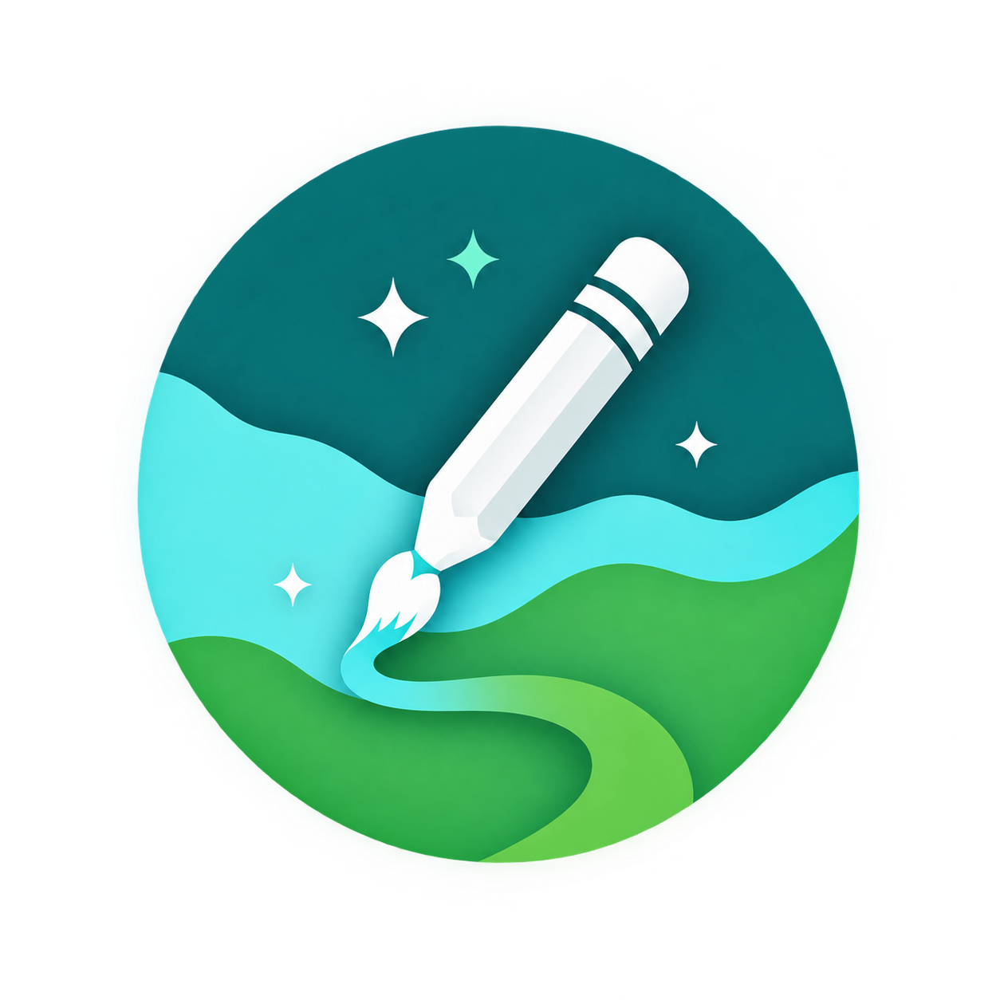

Votre composant est vide
Décris ton composant à Claude (panneau de droite) pour le générer, puis édite-le ici.
Contrôle de votre compte Claude.

EkwaSliceDécris ton composant à Claude (panneau de droite) pour le générer, puis édite-le ici.